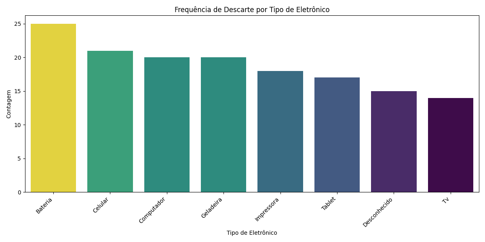
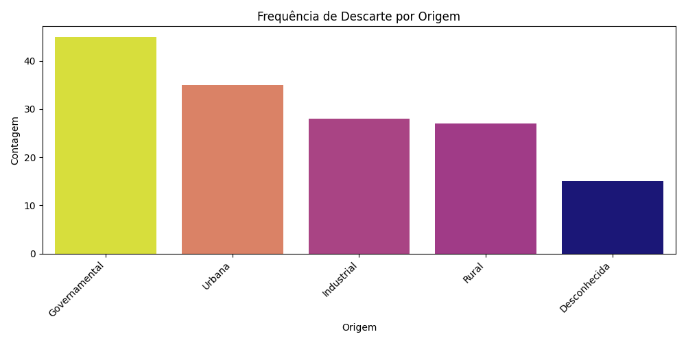
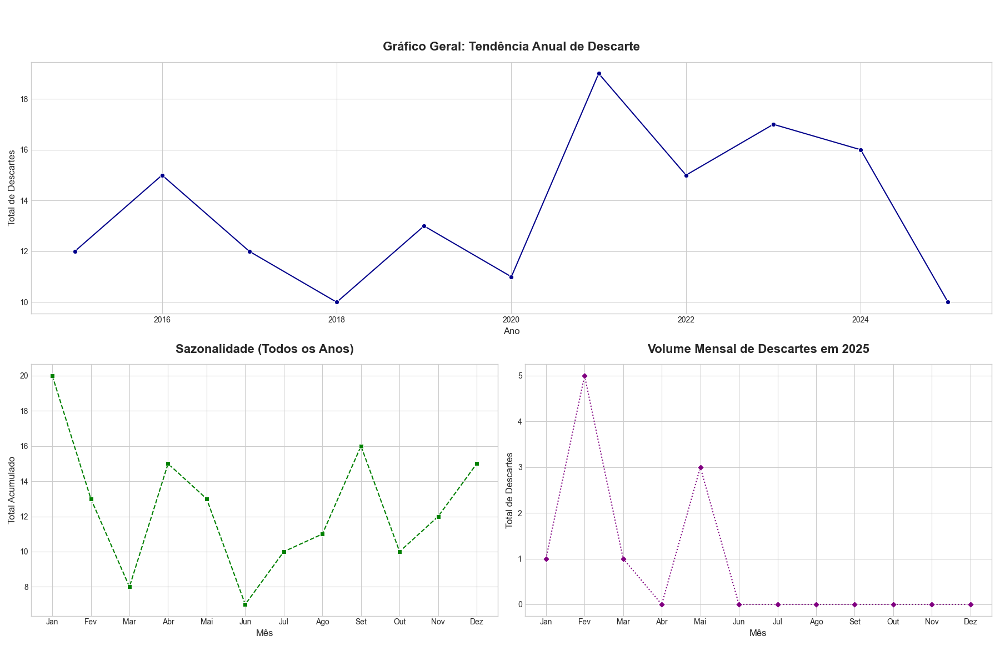
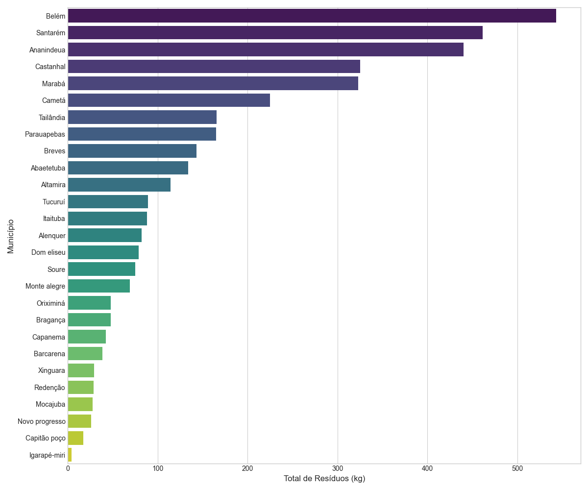
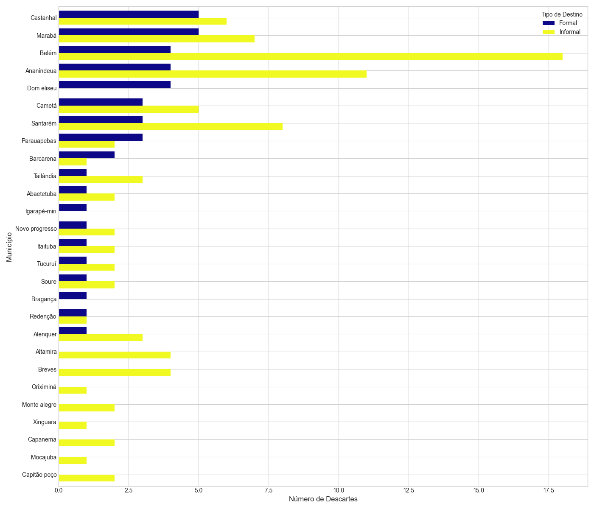
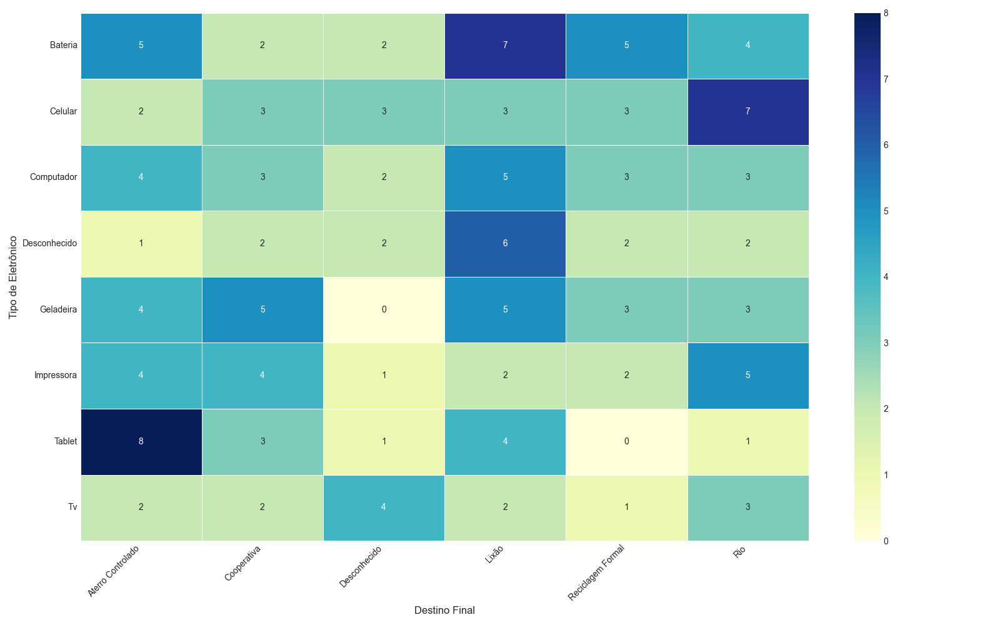
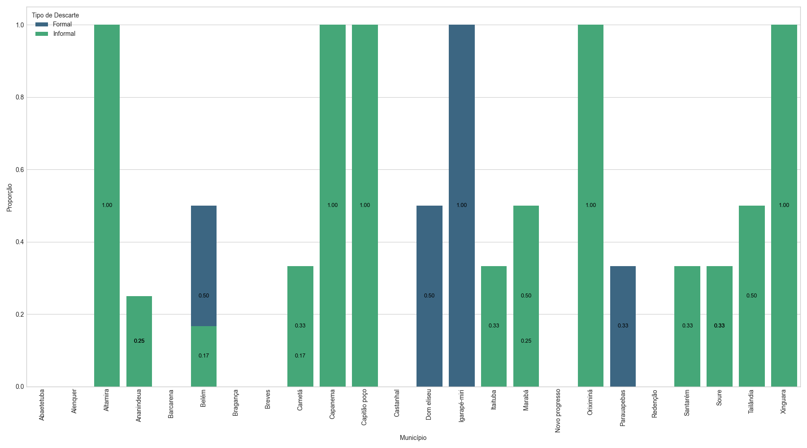
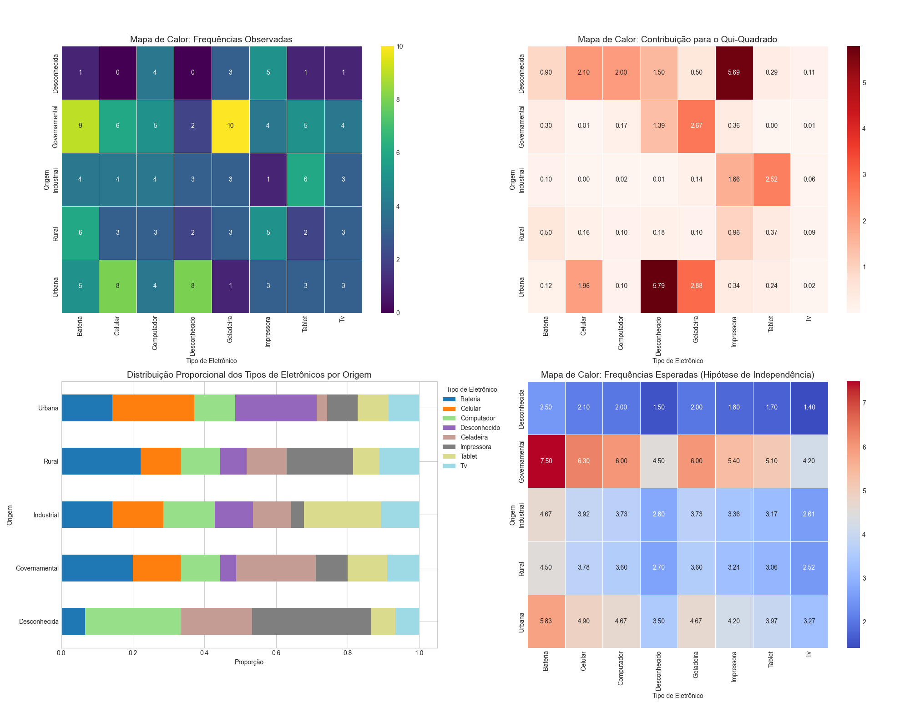

Análise de Distribuição e Frequência
Frequência de Descarte por Tipo de Eletrônico

Insight:
Este gráfico revela os tipos de equipamentos eletrônicos mais frequentemente descartados. A identificação das categorias predominantes, como celulares e computadores, é crucial para direcionar campanhas de coleta e logística de reciclagem.
Frequência de Descarte por Origem

Insight:
A análise da origem dos descartes (residencial, comercial, etc.) permite entender os principais geradores de lixo eletrônico. Essa informação pode guiar políticas públicas e parcerias com setores específicos para melhorar a gestão desses resíduos.
Análise Temporal do Descarte
Gráficos de Análise Temporal do Descarte Eletrônico

Insight:
O painel temporal mostra a evolução do descarte ao longo dos anos e a sazonalidade mensal. Picos de descarte podem coincidir com períodos pós-festas (Natal, Dia das Mães) ou lançamentos de novas tecnologias, indicando os melhores momentos para campanhas de conscientização e coleta.
Análise Agregada por Município
Total de Resíduos Descartados por Município (kg)

Insight:
A visualização do volume total de lixo eletrônico por município aponta as áreas geográficas com maior geração de resíduos. Isso é fundamental para o planejamento de infraestrutura, como a instalação de ecopontos e centros de triagem.
Comparação de Descarte Formal vs. Informal por Município

Insight:
Este comparativo expõe a eficácia das políticas de reciclagem em cada localidade. Municípios com alta taxa de descarte informal necessitam de intervenções urgentes para evitar contaminação ambiental e promover a economia circular.
Relação entre Tipo de Eletrônico e Destino Final
Heatmap: Tipo de Eletrônico vs. Destino Final

Insight:
O mapa de calor demonstra padrões de descarte específicos. Por exemplo, itens de menor valor (como carregadores) podem ser mais destinados a lixões, enquanto equipamentos maiores (como geladeiras) podem ter maior chance de irem para cooperativas. Isso ajuda a criar estratégias de coleta focadas por tipo de produto.
Impacto da Educação Ambiental no Descarte
Proporção de Descarte (Formal vs Informal)

Insight:
Este gráfico tende a mostrar que, em municípios com programas de educação ambiental, a proporção de descarte formal (reciclagem, cooperativas) é significativamente maior, comprovando a eficácia de políticas de conscientização.
Análise da Relação entre Origem e Tipo de Lixo Eletrônico
Tabelas de Análise de Associação

Insight:
O teste Qui-Quadrado e os gráficos associados confirmam se existe uma relação estatisticamente significativa entre a origem (ex: residencial) e o tipo de eletrônico descartado. O mapa de contribuição destaca quais cruzamentos (ex: "Residencial" e "Celular") são mais fortes, revelando que certos setores são "especializados" em descartar tipos específicos de equipamentos.